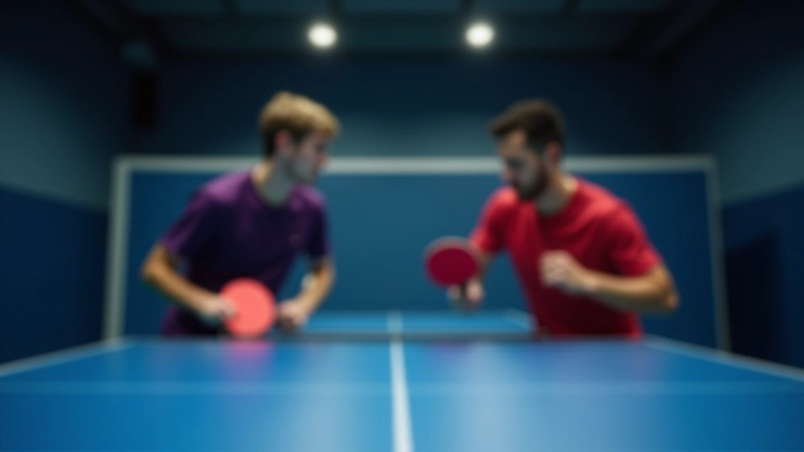
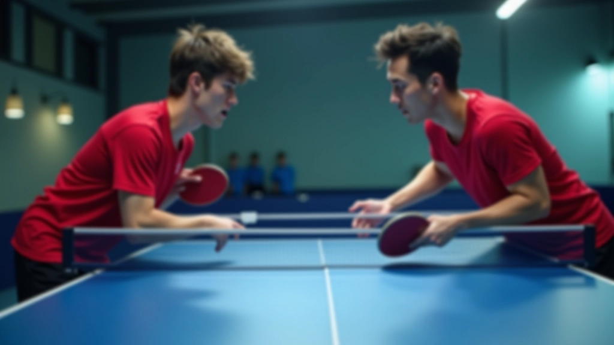
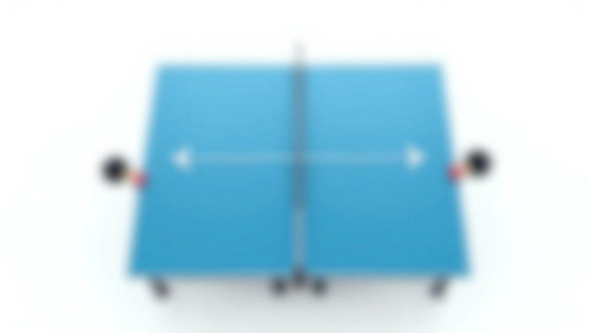
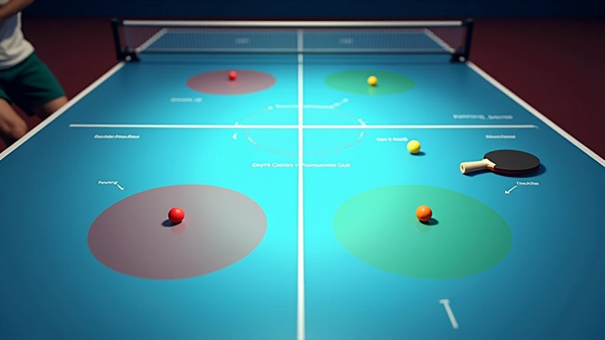
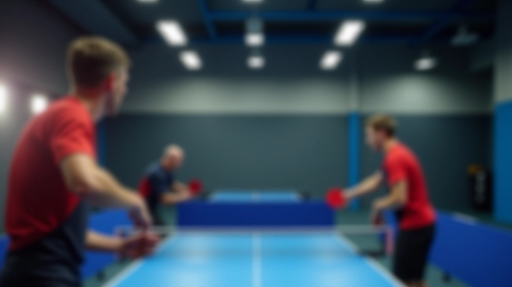
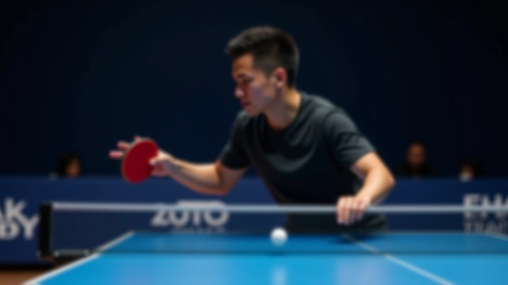
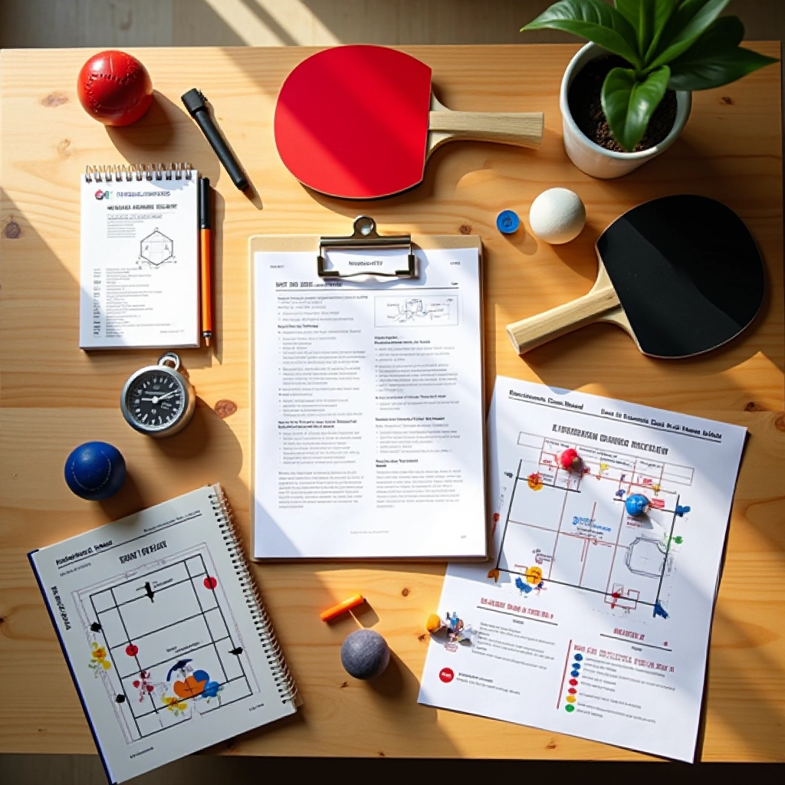
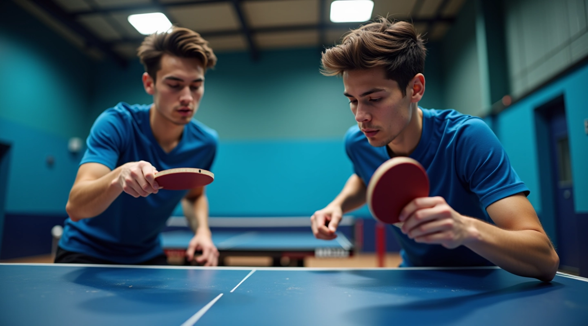
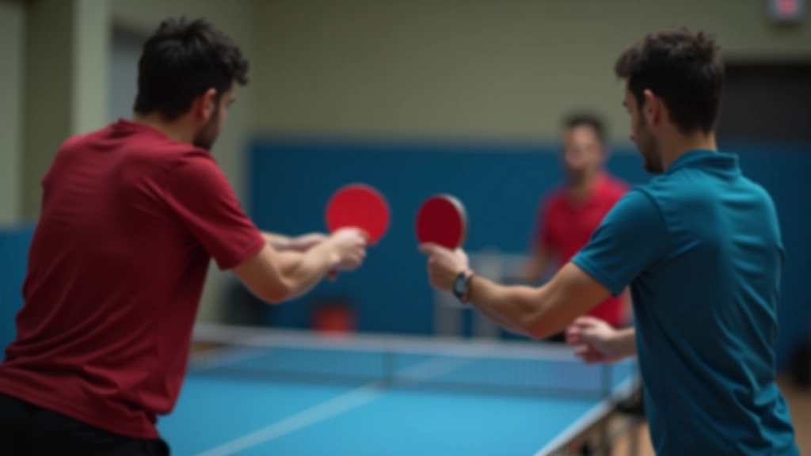
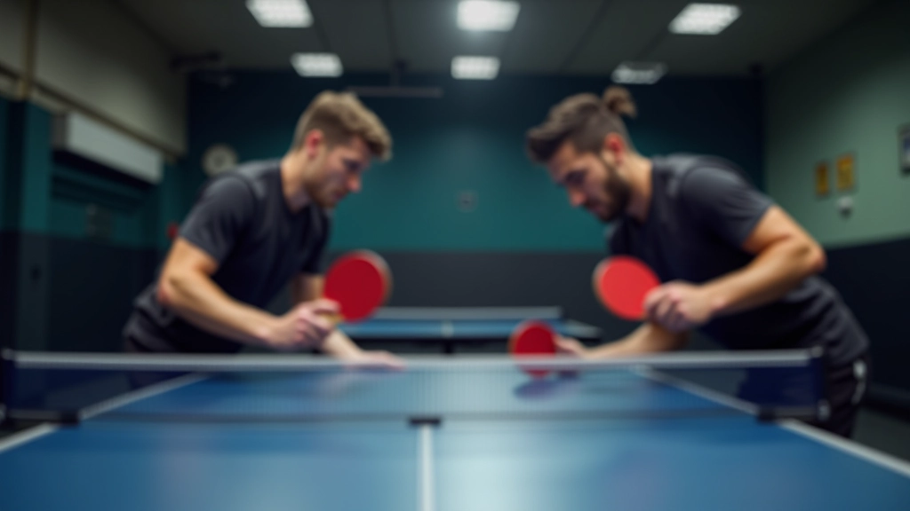

استراتيجيات الهجوم المنسق والتسلسلات
بناء خطط هجومية قوية مع زميلك، وتنفيذ تسلسلات ضربات منسقة تغيّر مسار اللعبة لصالحك
في الزوجي، الهجوم ليس عن قوة الضربة الواحدة — إنه عن الترتيب والتسلسل. عندما تعمل أنت وزميلك معاً بانسجام، تخلقان ضغطاً لا يقاوم على الخصم. المشكلة أنّ معظم اللاعبين يفتقدون الخطة الواضحة. يلعبون ضربة تلو الأخرى، لكن بدون تسلسل منطقي.
هنا يأتي الفرق الحقيقي. الفريق الذي يملك استراتيجية هجومية منسقة يتحكّم باللعبة. يعرفان متى يُسرّعان، متى يتحركان جانباً، ومتى يُنهيان النقطة. هذا الدليل سيعلمك كيف تبني خطة هجومية مع زميلك، وتنفذان تسلسلات ضربات تجعل الخصوم في حرج.

أساس الهجوم المنسق: المبادئ الأساسية
الهجوم المنسق يقوم على ثلاثة مبادئ أساسية. أولاً، الاستعداد المستمر — كل لاعب يكون مستعداً للضربة التالية في أي لحظة. ثانياً، التوزيع الذكي للأدوار — من يأخذ الكرة القصيرة؟ من يتعامل مع الكرات الطويلة؟ ثالثاً، التسلسل الهادف — كل ضربة تقرّبكما أكثر من نهاية النقطة.
تخيّل اللعبة كسيناريو مسرحي. الفصل الأول هو التبادل العادي — أنت وزميلك تبنيان الموقف. الفصل الثاني هو التسريع — تبدآن بإطلاق ضربات أقوى. الفصل الثالث هو الإنهاء — تُنهيان النقطة بضربة حاسمة. بدون هذا التسلسل، تضيعان الفرص وتستنزفان الطاقة.

ملاحظة مهمة
هذا الدليل يقدم معلومات تعليمية عملية لتحسين التنسيق والاستراتيجية في لعب الزوجي. النتائج تختلف حسب مستوى اللاعب والممارسة المنتظمة. استشر مدربك المحلي قبل تطبيق أي تقنيات جديدة، خاصة إذا كنت تعاني من إصابات سابقة.

التسلسلات الهجومية الفعالة
التسلسل الأول يُسمى البناء ثم الإنهاء . تبدآن بضربات قصيرة ودقيقة لإرهاق الخصم. بعد 3-4 تبادلات، تأخذان كرة أطول قليلاً وتهاجمان. الزميل الأمامي يبحث عن فرصة لإنهاء مباشرة، والخلفي يدعمه بضربات جانبية.
التسلسل الثاني أكثر تعقيداً. اسمه التناوب السريع . هنا أنت تُرسل كرة قصيرة، زميلك يقطعها للأمام، ثم أنت تُنهي من الخلف. الخصوم يُصابون بالارتباك لأنهم لا يعرفون من سيضرب الكرة التالية. هذا يتطلب تدريب مكثف — حوالي 50 تكراراً يومياً لمدة أسبوعين قبل أن تشعرا بالراحة فيها.
التنسيق المكاني: من يأخذ أي منطقة؟
المشكلة الشائعة في الفرق الضعيفة هي الارتباك في المناطق . كلاهما يركض نحو نفس الكرة، أو كلاهما ينتظر الآخر. هنا القاعدة الذهبية: اللاعب الأقرب يأخذ الكرة دائماً .
لكن هناك استثناء ذكي. إذا كنت في الخلف وأنت أقوى في الضربات الهجومية، خذ الكرة حتى لو كان زميلك أقرب قليلاً. التخطيط المسبق مع زميلك يجعل هذا واضحاً. قبل كل نقطة، اتفقا على من يأخذ الكرات المتوسطة في المنطقة الوسطية. بعد 2-3 مباريات، ستصير عادة تلقائية.


التمارين العملية للتنفيذ
أفضل طريقة للتعلم هي التدريب المنظم. تمرين الأول: تمرين البناء . زميلك يُطلق كرات قصيرة لك من الجانب الأيمن، أنت ترجع بدقة، ثم يأخذها ويُرسلها أفقياً. كررا هذا 30 مرة متتالية. لا تقلقا من الأخطاء — الهدف هو التعود على الإيقاع.
التمرين الثاني: الإنهاء السريع . تبدآن بتبادل عادي لمدة 3 ضربات فقط، ثم على الضربة الرابعة، يهاجم الأمامي مباشرة. كررا 20 مرة. هذا يعلمكما متى تنتقلان من الدفاع إلى الهجوم دون تردد.
التمرين الثالث: محاكاة اللعب الحقيقي . العبا نقاط حقيقية لكن ركزا على تطبيق استراتيجية واحدة فقط. لا تحاولا فعل كل شيء دفعة واحدة. ركزا على التسلسل المحدد لمدة 10 نقاط، ثم انتقلا للتسلسل التالي.
توقيت الهجوم: متى تنتقلان من الدفاع إلى الهجوم؟
هذا هو السر الحقيقي. اللاعبون الضعفاء يهاجمون في أي وقت، حتى عندما يكونان غير مستعدين. اللاعبون الأقوياء ينتظرون اللحظة المثالية. كيف تعرفان متى تأتي؟
عندما ترجع الكرة بنفس الارتفاع تقريباً لمرتين متتاليتين، هذا يعني أن الخصم تحت ضغط. هذه اللحظة تستمر ربع ثانية فقط. أنت وزميلك يجب أن تكونا مستعدين للضربة الهجومية. إذا انتظرتما ثانية إضافية، تضيعان الفرصة.
التواصل هنا حاسم. إشارة سريعة — نظرة أو إيماءة خفيفة — تخبر زميلك أنك ستهاجم الآن. بعد مئات التكرارات، لن تحتاجا حتى للإشارة. ستشعران بالتوقيت معاً.

الأخطاء الشائعة وكيفية تجنبها
الاتكاء على لاعب واحد
الخطأ الأول: كل الهجمات تأتي من نفس اللاعب. هذا يجعل الخصم يتوقع الحركة. الحل؟ تبادلا الأدوار. اليوم الأمامي يهاجم، غداً الخلفي يبدأ الهجوم. تنويع يخلق ارتباكاً.
عدم التحضير النفسي
الخطأ الثاني: تبدآن في اللعبة بدون خطة واضحة. أنتما تعتمدان على الحظ. قبل كل مباراة، اجلسا معاً لمدة 5 دقائق وخططا: أي تسلسل ستستخدمان أولاً؟ متى تنتقلان للثاني؟
الإفراط في التعقيد
الخطأ الثالث: محاولة تنفيذ 5 تسلسلات مختلفة في نفس المباراة. هذا يؤدي لارتباك وأخطاء. ركزا على تسلسل واحد أو اثنين فقط حتى تتقنانهما تماماً.
عدم التكيف مع الخصم
الخطأ الرابع: تكراران نفس الاستراتيجية حتى لو كانت لا تعمل. الخصوم يتعلمون بسرعة. إذا فشل التسلسل الأول بعد 3 محاولات، انتقلا للثاني. المرونة تفوز على الروتين.
الخطوات التالية: ابدأ الآن
بناء استراتيجية هجومية منسقة يتطلب وقتاً والتزاماً. لا تتوقع أن تصير خبيراً في أسبوع. الفريق الذي يملك صبراً وتركيزاً هو الذي ينجح. ابدآ باختيار تسلسل واحد فقط — البناء ثم الإنهاء مثلاً. تمرنا عليه يومياً لمدة أسبوعين. بعدها، أضيفا التسلسل الثاني.
راقبا مستواكما. لاحظا الأخطاء والإيجابيات. اطلبا من مدربكما أن يراقب تطوركما ويقدم ملاحظات. هذه الحلقة من التدريب والتقييم والتحسين هي ما يفصل بين الفرق العادية والفرق القوية.
الزوجي ليس عن موهبة فردية — إنه عن التنسيق والثقة والاستراتيجية. عندما تتقنان هذه العناصر، ستشعران بفرق حقيقي في أدائكما.

الكاتب
فريق شمس الطاولة للمحتوى الرياضي
فريق المحتوى والمراجعة
تم إعداده بواسطة فريق شمس الطاولة للمحتوى، المتخصص في أدلة عملية وسهلة المتابعة لتحسين التنسيق في لعب الزوجي.
قراءات ذات صلة

أساسيات التنسيق في المراكز المختلفة
تعلم كيفية التنسيق الفعال بين اللاعب الأمامي والخلفي

نظام الإشارات والتواصل الفعال
تطوير نظام إشارات واضح مع تقنيات التواصل الصامت

تمارين الحركة والتغطية على الملعب
تدريبات متقدمة للحركة السريعة والتغطية المتبادلة